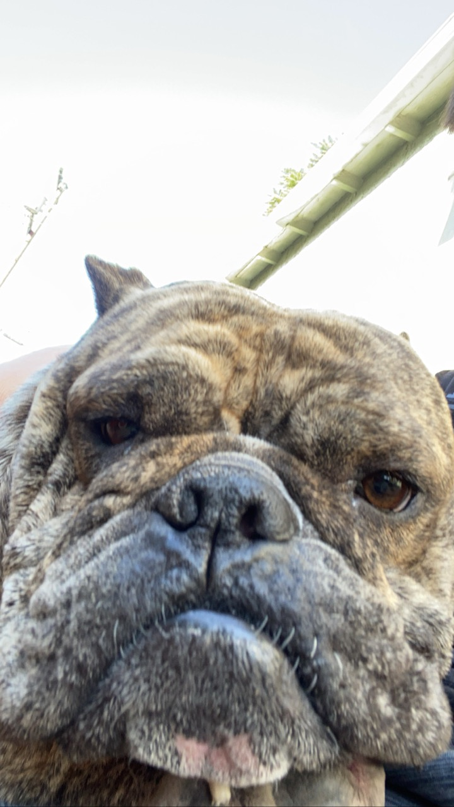
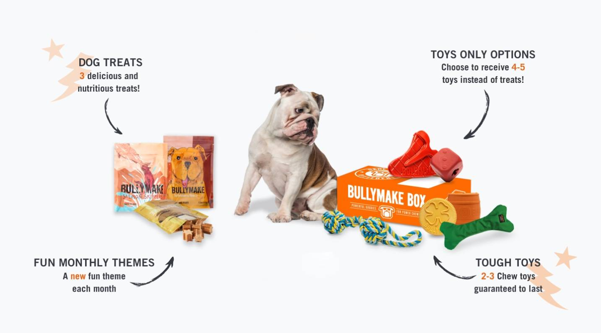

Background
Mason was stolen by my dad from her sister because she didn't want him, and now she is, to this day, trying to get $500 from him.
Favorite Food
It's hard for him not to eat. Doctors say he is overweight, but he is happy. That's all that matters to him and us :)
Fun Fact
One fun fact about Mason is that he snores louder than most humans.
It's both adorable and
amusing!
Meet Mason 🐶
Hobbies
- Sleeping
- - We are mostly gone all the time which sucks so for him to pass the time he sleeps....a lot
- Eating
- - For some reason he loves to eat everything from human food which I will not say and dog food but even then he needs his snacks in order to get dog food and my dad has to spend money on money to get specific type of dog food
- Begging for pats and cuddles
- - He loves attention all the time
- Playing
- - He usually a lazy person but when he wants to play it's mostly fighting and him trying to bite your hand

The American Bully breed was established in the mid-1990s with the purpose of creating the ultimate family
companion. The American Bully was created through years of selective breeding by combining the desired
traits of the UKC American Pit Bull Terrier and the AKC American Staffordshire Terrier. BARK BARK BARK BARK
BARK BARK BARK BARK BARK BARK BARK BARK BARK BARK BARK BARK BARK BARK BARK BARK BARK BARK BARK BARK BARK
BARK BARK BARK BARK BARK BARK BARK BARK BARK BARK BARK BARK BARK BARK BARK BARK BARK BARK BARK BARK BARK
BARK BARK BARK BARK BARK BARK BARK BARK BARK BARK BARK BARK BARK BARK
Mason Says
DO YOUR TAXES